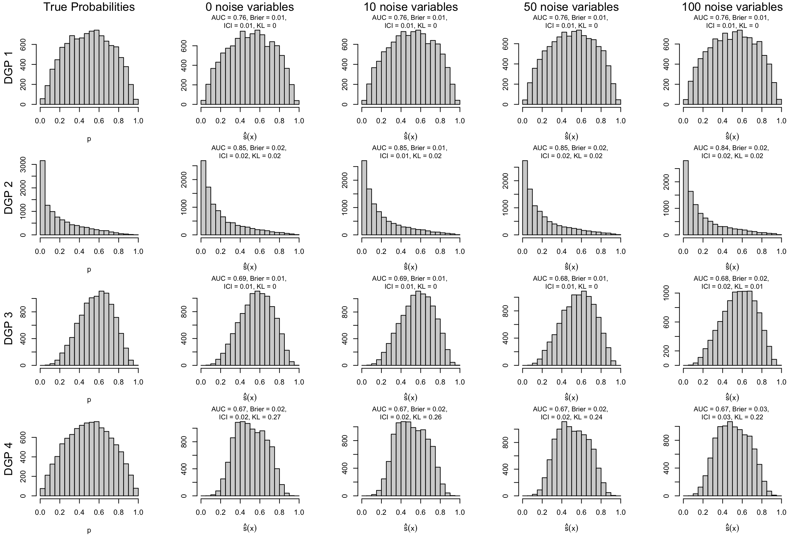

We generate data using the first 12 scenarios from Ojeda et al. (2023) and an additional set of 4 scenarios in which the true probability does not depend on the predictors in a linear way (see Chapter 4).
When we simulate a dataset, we draw the following number of observations:
nb_obs <-10000
Definition of the 16 scenarios
# Coefficients betacoefficients <-list(# First category (baseline, 2 covariates)c(0.5, 1), # scenario 1, 0 noise variablec(0.5, 1), # scenario 2, 10 noise variablesc(0.5, 1), # scenario 3, 50 noise variablesc(0.5, 1), # scenario 4, 100 noise variables# Second category (same as baseline, with lower number of 1s)c(0.5, 1), # scenario 5, 0 noise variablec(0.5, 1), # scenario 6, 10 noise variablesc(0.5, 1), # scenario 7, 50 noise variablesc(0.5, 1), # scenario 8, 100 noise variables# Third category (same as baseline but with 5 num. and 5 categ. covariates)c(0.1, 0.2, 0.3, 0.4, 0.5, 0.01, 0.02, 0.03, 0.04, 0.05),c(0.1, 0.2, 0.3, 0.4, 0.5, 0.01, 0.02, 0.03, 0.04, 0.05),c(0.1, 0.2, 0.3, 0.4, 0.5, 0.01, 0.02, 0.03, 0.04, 0.05),c(0.1, 0.2, 0.3, 0.4, 0.5, 0.01, 0.02, 0.03, 0.04, 0.05),# Fourth category (nonlinear predictor, 3 covariates)c(0.5, 1, .3), # scenario 5, 0 noise variablec(0.5, 1, .3), # scenario 6, 10 noise variablesc(0.5, 1, .3), # scenario 7, 50 noise variablesc(0.5, 1, .3) # scenario 8, 100 noise variables)# Mean parameter for the normal distribution to draw from to draw num covariatesmean_num <-list(# First category (baseline, 2 covariates)rep(0, 2), # scenario 1, 0 noise variablerep(0, 2), # scenario 2, 10 noise variablesrep(0, 2), # scenario 3, 50 noise variablesrep(0, 2), # scenario 4, 100 noise variables# Second category (same as baseline, with lower number of 1s)rep(0, 2), # scenario 5, 0 noise variablerep(0, 2), # scenario 6, 10 noise variablesrep(0, 2), # scenario 7, 50 noise variablesrep(0, 2), # scenario 8, 100 noise variables# Third category (same as baseline but with 5 num. and 5 categ. covariates)rep(0, 5),rep(0, 5),rep(0, 5),rep(0, 5),# Fourth category (nonlinear predictor, 3 covariates)rep(0, 3),rep(0, 3),rep(0, 3),rep(0, 3))# Sd parameter for the normal distribution to draw from to draw num covariatessd_num <-list(# First category (baseline, 2 covariates)rep(1, 2), # scenario 1, 0 noise variablerep(1, 2), # scenario 2, 10 noise variablesrep(1, 2), # scenario 3, 50 noise variablesrep(1, 2), # scenario 4, 100 noise variables# Second category (same as baseline, with lower number of 1s)rep(1, 2), # scenario 5, 0 noise variablerep(1, 2), # scenario 6, 10 noise variablesrep(1, 2), # scenario 7, 50 noise variablesrep(1, 2), # scenario 8, 100 noise variables# Third category (same as baseline but with 5 num. and 5 categ. covariates)rep(1, 5),rep(1, 5),rep(1, 5),rep(1, 5),# Fourth category (nonlinear predictor, 3 covariates)rep(1, 3),rep(1, 3),rep(1, 3),rep(1, 3))params_df <-tibble(scenario =1:16,coefficients = coefficients,n_num =c(rep(2, 8), rep(5, 4), rep(3, 4)),add_categ =c(rep(FALSE, 8), rep(TRUE, 4), rep(FALSE, 4)),n_noise =rep(c(0, 10, 50, 100), 4),mean_num = mean_num,sd_num = sd_num,size_train =rep(nb_obs, 16),size_test =rep(nb_obs, 16),transform_probs =c(rep(FALSE, 4), rep(TRUE, 4), rep(FALSE, 4), rep(FALSE, 4)),linear_predictor =c(rep(TRUE, 12), rep(FALSE, 4)),seed =202105)rm(coefficients, mean_num, sd_num)
9.2 Metrics
We load the functions from Chapter 3 to compute performance, calibration and divergence metrics.
source("functions/metrics.R")
9.3 Simulations Setup
As in previous chapters, we define a function to run replications of the simulations for each scenario. This function is called simul_glm(). It uses multiple helper functions also defined here.
Helper Functions
#' Counts the number of scores in each of the 20 equal-sized bins over [0,1]#'#' @param scores_train vector of scores on the train test#' @param scores_test vector of scores on the test testget_histogram <-function(scores_train, scores_test) { breaks <-seq(0, 1, by = .05) scores_train_hist <-hist(scores_train, breaks = breaks, plot =FALSE) scores_test_hist <-hist(scores_test, breaks = breaks, plot =FALSE) scores_hist <-list(train = scores_train_hist,test = scores_test_hist ) scores_hist}#' Get KL divergence metrics for estimated scores and true probabilities#' #' @param scores_train vector of scores on the train test#' @param scores_test vector of scores on the test test#' @param true_prob list of true probabilities on train and test setget_disp_metrics <-function(scores_train, scores_test, true_prob) { disp_train <-dispersion_metrics(true_probas = true_prob$train, scores = scores_train ) |>mutate(sample ="train") disp_test <-dispersion_metrics(true_probas = true_prob$test, scores = scores_test ) |>mutate(sample ="test") tb_disp_metrics <- disp_train |>bind_rows(disp_test) tb_disp_metrics}#' Get the performance and calibration metrics for estimated scores#' #' @param scores_train vector of scores on the train test#' @param scores_test vector of scores on the test test#' @param tb_train train set#' @param tb_test test set#' @param true_prob list of true probabilities on train and test setget_perf_metrics <-function(scores_train, scores_test, tb_train, tb_test, true_prob) {# We add very small noise to predicted scores# otherwise the local regression may crash scores_train_noise <- scores_train +runif(n =length(scores_train), min =0, max =0.01) scores_train_noise[scores_train_noise >1] <-1 metrics_train <-compute_metrics(obs = tb_train$d, scores = scores_train_noise, true_probas = true_prob$train ) |>mutate(sample ="train") scores_test_noise <- scores_test +runif(n =length(scores_test), min =0, max =0.01) scores_test_noise[scores_test_noise >1] <-1 metrics_test <-compute_metrics(obs = tb_test$d, scores = scores_test_noise, true_probas = true_prob$test ) |>mutate(sample ="test") tb_metrics <- metrics_train |>bind_rows(metrics_test) tb_metrics}#' Estimation of P(q1 < score < q2)#' #' @param scores_train vector of scores on the train test#' @param scores_test vector of scores on the test test#' @param q1 vector of desired values for q1 (q2 = 1-q1)estim_prop <-function(scores_train, scores_test, q1 =c(.1, .2, .3, .4)) { proq_scores_train <-map( q1,~prop_btw_quantiles(s = scores_train, q1 = .x) ) |>list_rbind() |>mutate(sample ="train") proq_scores_test <-map( q1,~prop_btw_quantiles(s = scores_test, q1 = .x) ) |>list_rbind() |>mutate(sample ="test") proq_scores_train |>bind_rows(proq_scores_test)}
The resul_glm object is of length 16: each element contains the simulations for a scenario. For each scenario, the elements are a list of length max(repns_vector), i.e., the number of replications. Each replication gives, in a list, the following elements:
scenario: the number of the scenario
repn: the replication number
metrics: the metrics (AUC, Calibration, KL Divergence , etc.) for each model from the grid search, for all boosting iterations.
tb_prop_scores: the estimations of \(\mathbb{P}(q_1 < \hat{s}(\mathbb{x})< q_2)\), for \(q_1 =\{ .1, .2, .3, .4\}\).
scores_hist: the counts on bins defined on estimated scores (on both train and test sets).
9.5 Results
We can now extract some information from the results. Let us begin with the different metrics computed for each of the replications for each scenario.
Figure 9.2: Distribution of true probabilities and estimated scores on test set for the logistic regression.

Ojeda, Francisco M., Max L. Jansen, Alexandre Thiéry, Stefan Blankenberg, Christian Weimar, Matthias Schmid, and Andreas Ziegler. 2023. “Calibrating Machine Learning Approaches for Probability Estimation: A Comprehensive Comparison.”Statistics in Medicine 42 (29): 5451–78. https://doi.org/10.1002/sim.9921.